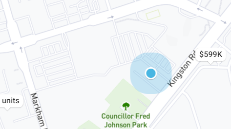

Property 2 Details

Address: 109 - 3650 Kingston Road
Price: $478,000, est. $2582/mo
- Type: Condo Apt
- Style: Apartment
- Size: 500-599 sqft
- Age: No Data
- Pets: Restrict
- Taxes: $860 /yr
- Maintenance Fees: $378 /mo
- Walk Score: 79
Quality Built Tridel Building In The Heart Of Scarborough Village.
This spacious 1 Bedroom Condo is Conveniently located on the ground floor with walkout to private Terrace.
Freshly updated with New S/S Appliances, New Flooring, New Washroom, Updated Kitchen cabinets, and Quartz Counter Top.
Location doesn't get any better than this: Walking distance to shopping, TTC,
GO train, Schools, 24hrs Goodlife Fitness, and Much More.
Minutes to Centennial College, University of Toronto, Hwy 401.
Very functional One Bedroom Unit that Features Bright, Open Concept Living!!!
Do Not Miss This Opportunity! Perfect for First Time Buyers.
Extras
Laundry With Stackable Washer/ Dryer.
Dishwasher, Fridge, Stove. Parking For Rent Plus 70 Visitor Spots.
Summer Bbqs And Beverages On Your Own Private Terrace! Ground Level Unit -
No Waiting For Elevators! Functional Large Windows
Bedroom